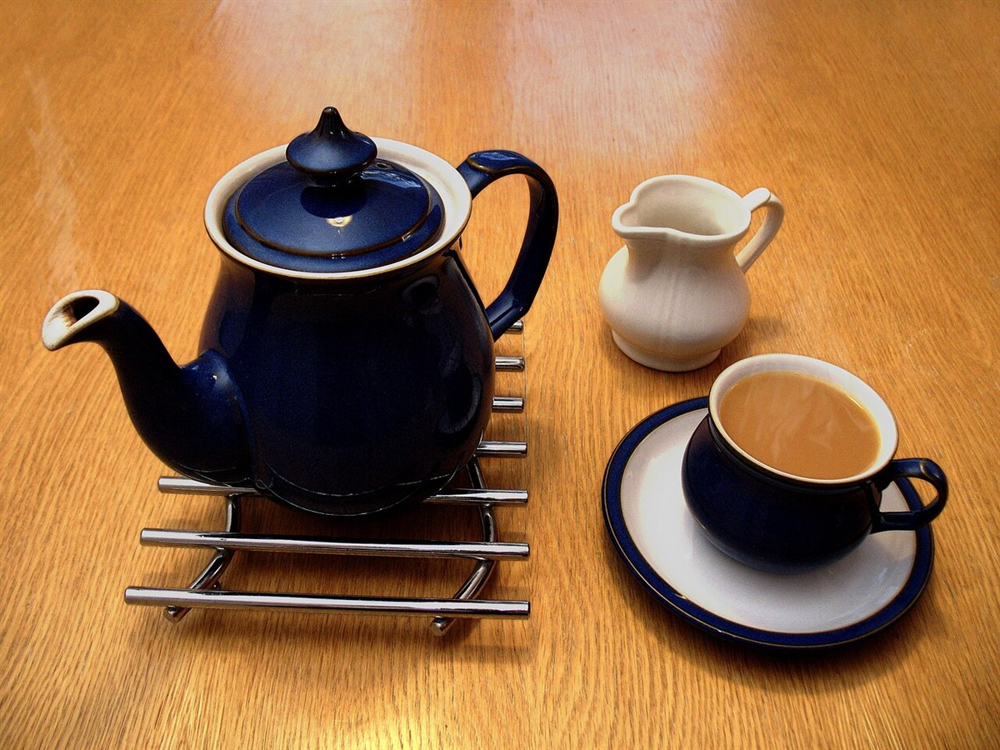
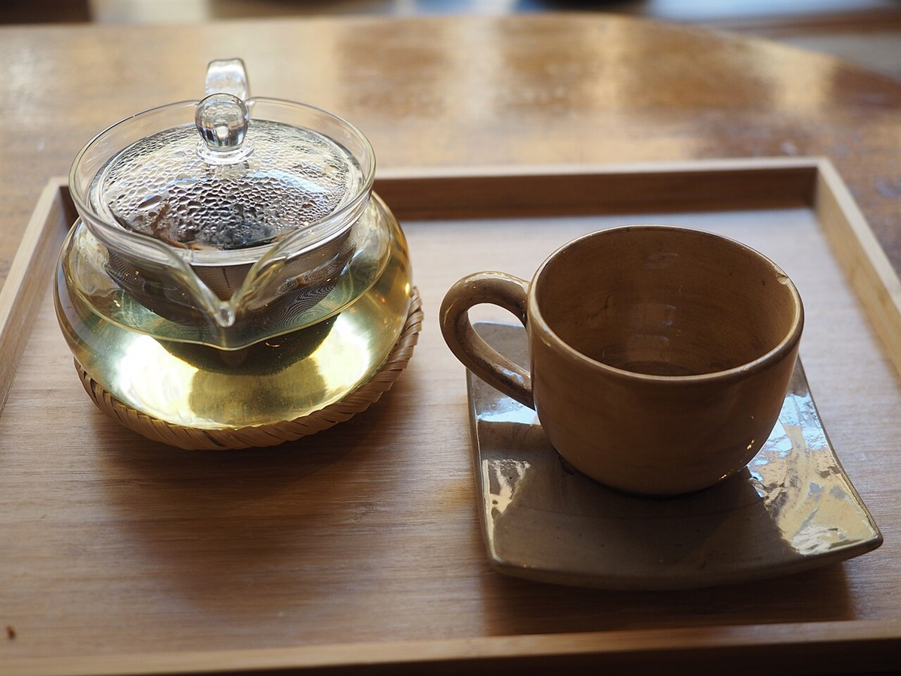

口コミ(イメージ例)
ご注意ください
以下は実際のお客様の声ではなく、制作側が作成したイメージ例です。ホームページ完成後に、お客様の声を掲載する場合の見え方をご覧いただくためのものです。
イメージ例
ゆっくり過ごせました。時間を気にせず、ひと息つけるのがうれしいです。
イメージ例
落ち着いた雰囲気で、ひとりでも入りやすいお店でした。静かに過ごしたいときにまた寄りたいです。
イメージ例
友人との待ち合わせに使いました。ほっとできる空間で、おしゃべりも自然と弾みました。


実際の口コミを見るには
実際に来店された方の口コミは、Googleマップやお店のInstagramでご確認いただけます。